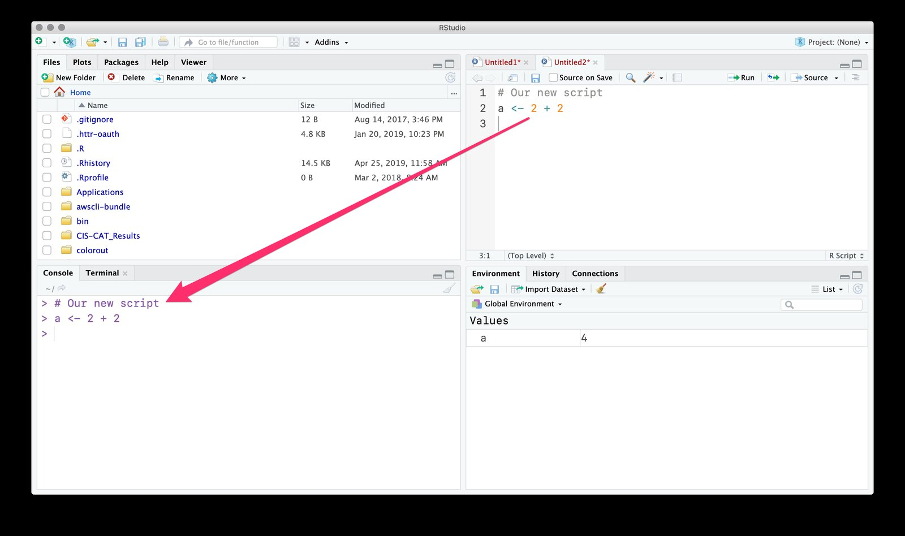
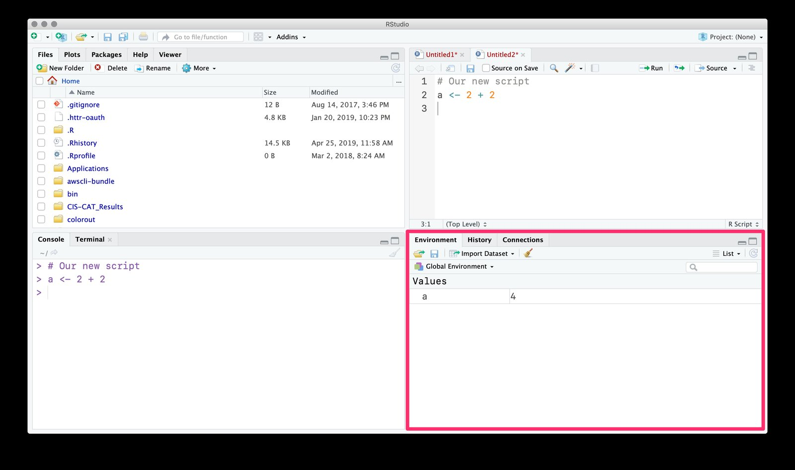
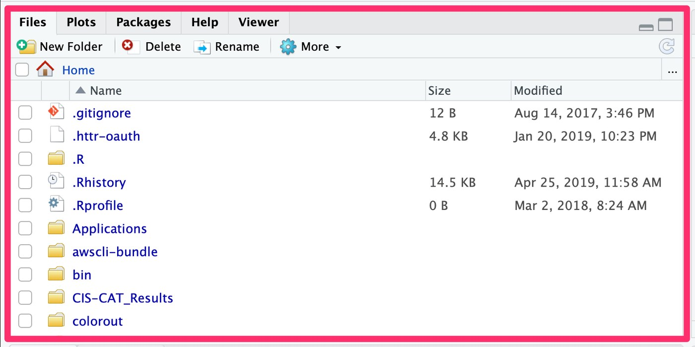
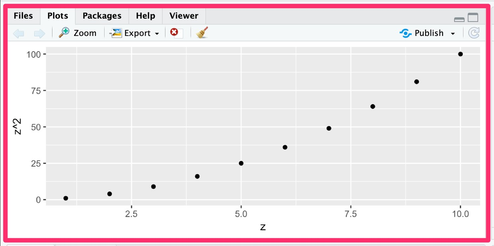

Four steps. At the end of them you can do Project 1, part 1.
Get in — join Posit Cloud and open the project
Find your way around — the four panes of RStudio
Do the work — load the data, find your tract, take a weighted average
Turn it in — knit it, export it, upload it on CarmenCanvas
Part 1 covers questions 1–4, is worth 5 points, and is due Tuesday, September 8, 2026. A good-faith attempt at all four questions earns full credit.
Part 2 (questions 5–8) is due Tuesday, September 15, 2026. The in-class quiz on the whole project is Thursday, September 17, 2026.
Getting in
Three names, one tool
Name
What it actually is
R
The language. Free, and the thing that does the arithmetic. You almost never open R by itself.
RStudio
The window you work in: a text editor, a place to run code, a file browser, a plot viewer.
Posit Cloud
That same RStudio, running in a browser tab. Nothing to install, and your files live on their servers.
Working on your own laptop instead? Install RStudio Desktop (free, from posit.co) and download the Project 1 template zip from CarmenCanvas. Everything in this deck looks and behaves the same either way.
Getting in, once
On the Carmen home page, click the Join Posit Cloud button.
Click Sign Up and use your OSU email. The Log in with Google button with your OSU Google account is the fastest route.
You land in the ECON 1101 workspace — a list of projects.
Open 1.project-1. Posit makes your own private copy the first time you open it; nobody else can see or change it.
Your work saves as you go. There is no submit button inside Posit Cloud — you still hand files in on CarmenCanvas.
The join link and access code live on the CarmenCanvas home page, not in these slides.
Finding your way around RStudio
First look at RStudio
Source — where you write and save code · Console — where code runs
Environment — the objects R is currently holding · Files / Plots / Help
Panes can be dragged around, so read the tab names, not the position
Posit Cloud shows this exact window inside your browser tab
Source pane and Console

Put your cursor on a line in Source and press:
Cmd+Enter on a Mac
Ctrl+Enter on Windows
RStudio copies that line into the Console and runs it — the arrow traces the trip.
The Console is fine for quick experiments. The Source pane is what you save and hand in.
The Environment pane remembers

Running a <- 2 + 2 did two things: it printed in the Console, and it created an object named a that R is now holding.
The Environment pane is that list. If a name is not in it, R does not know it yet — that is what object not found means.
rm(list = ls()) empties the list on purpose.
Files, Plots, and Help


Files is your file explorer. Export hides under More; on Posit Cloud an Upload button sits in that same toolbar
Plots holds every figure you make; Packages lists what is installed
Help: type ?mean in the Console and the documentation opens in that pane
Why project.Rproj matters
Double-clicking project.Rproj tells R “this folder is home.” Every file path is then written relative to that folder, so the code works on any machine.
The two files in your template sit in different places, so their paths differ:
# scripts/first-r-script.R runs from the project rootatlas =fread("data/raw/atlas.csv")# scripts/empirical-project-1.Rmd knits from inside scripts/,# so it has to climb one folder firstatlas =fread("../data/raw/atlas.csv")
../ means “go up one folder.” On Posit Cloud the project is already open for you, so this is handled — but the ../ in the .Rmd still matters.
What is in the template folder
File or folder
What it is
project.Rproj
The project file. Open this first if you work locally.
data/raw/atlas.csv
The data: 73,278 Census tracts. Never edit it.
scripts/first-r-script.R
A guided tour of R. Run it line by line first.
scripts/empirical-project-1.Rmd
Your write-up. Questions 1 and 3 worked for Tucson.
pictures/
Where your saved Atlas maps go.
output/
Empty. Put figures and tables you save here.
homework-1.pdf
The full assignment, for working offline.
Doing the Part 1 work
Packages: install once, load every session
# The set-up chunk at the top of empirical-project-1.Rmdif (!require("pacman")) install.packages("pacman")pacman::p_load(data.table, ggplot2, modelsummary, binsreg, knitr, broom, fixest)
Installing downloads a package onto the machine — once, ever
Loading switches it on for this session — every single time you open the project
p_load() does both: it installs anything missing, then loads all of them
The first run takes a couple of minutes. Every run after that is instant
Run the set-up chunk first, every session
Skip it — or restart R, or come back tomorrow — and you get one of these:
Error in fread("../data/raw/atlas.csv") :
could not find function "fread"
Error: object 'atlas' not found
The first says the package is not loaded. The second says the object is not in your Environment. Both have the same cure: run the set-up chunk again, then re-run the line that loads the data.
Load the data
atlas =fread("../data/raw/atlas.csv")nrow(atlas)head(atlas[, .(state, county, tract, kfr_pooled_p25, count_pooled)], 4)
73,278 rows, 62 columns — one row per U.S. Census tract, a neighborhood of roughly 4,000 people.
Look before you compute
kfr_pooled_p25 is the average adult household income at ages 31–37 of children whose parents earned at the 25th percentile.
summary(atlas$kfr_pooled_p25)
Min. 1st Qu. Median Mean 3rd Qu. Max. NA's
0 28973 33733 34443 39167 105732 1267
Find your tract
The Atlas prints a FIPS code for any address. Searching Lynwood Road, Verona, New Jersey gives tract 34013021000: state 34, county 013, tract 021000.
atlas[state ==34& county ==13& tract ==21000, .(kfr_pooled_p25)]
kfr_pooled_p25
1: 50376.57
Drop the leading zeros. R reads these as numbers, not text, so 013 and 13 are the same thing — but a mistyped tract quietly returns a different neighborhood, or nothing at all.
Taking averages: Question 3
A plain average treats a 300-child tract and a 6,000-child tract the same. Weight by count_pooled, the number of children, and you get the average child’s experience.
United States $34,311.68; Arizona (state == 4) $32,130.48. Your Verona tract’s $50,376.57 beats both.
The NA trap
first-r-script.R asks you to run all three of these. Only one is right.
# 1. drop the missing weights first — the right oneatlas[!is.na(count_pooled), .(m =weighted.mean(kfr_pooled_p25, w = count_pooled,na.rm =TRUE))] # returns 34311.68# 2. the same call, without the filteratlas[, .(m =weighted.mean(kfr_pooled_p25, w = count_pooled,na.rm =TRUE))] # returns NA# 3. no weights at all — a different questionatlas[, .(m =weighted.mean(kfr_pooled_p25,na.rm =TRUE))] # returns 34443.48
na.rm = TRUE drops missing outcomes, but 827 tracts have a missing weight, and one missing weight poisons the whole answer.
One line, fifty states
by = state runs the same calculation separately for every group.
Those five FIPS codes are North Dakota, Wyoming, South Dakota, Nebraska and Iowa. Ohio is state == 39, at $32,301.59 — below the U.S. $34,311.68.
R Markdown: prose and code in one file
empirical-project-1.Rmd is your write-up and your code. Press Knit and it becomes an HTML document with the numbers filled in.
---title: "Empirical project 1"author: "Your name"---Prose you write, in ordinary English.```{r}us_p25 =unlist(atlas[!is.na(count_pooled), .(m =weighted.mean(kfr_pooled_p25, w = count_pooled,na.rm =TRUE))])```The US weighted mean is \$`r round(us_p25, digits = 2)`.
The last line is inline code: knitting replaces it with 34311.68, so the number in your sentence can never disagree with your code.
Putting your Atlas maps in
Question 1 wants a map of your tracts, saved from the Atlas.
On opportunityatlas.org, zoom to your address and use the download as image button.
In RStudio’s Files pane, click Upload, then put the file in pictures/.
Point the template’s chunk at your file instead of Tucson’s:
```{r, echo=FALSE, out.width="75%", fig.cap="Income at age 35."}knitr::include_graphics("../pictures/tucson-age-35-income.png")```
echo=FALSE hides the code, out.width sizes the map, fig.cap becomes the caption under it.
Knit early, knit often
Knitting starts from a completely empty workspace. It does not know about anything you ran in the Console an hour ago.
So code that “works” can still fail on knit — and that is the version I grade.
Knit the first time in week one, while the file is nearly empty
Knit again after every question you finish
Read the error, fix the line it names, knit again
The knitted HTML is your write-up; you still upload the .Rmd with it
A peek at Part 2
pima = atlas[state ==4& county ==19]lm(kfr_pooled_p75 ~ kfr_pooled_p25, data = pima)cor(pima$kfr_pooled_p25, pima$kfr_pooled_p75,use ="complete.obs")
When you ask, paste the code you ran and the exact error text. “It doesn’t work” is not something anyone can debug. Fifteen minutes stuck is long enough — ask.
![The Posit Cloud sign-in card. Across the top are two tabs: 'Log In', which is selected, and, to its right, 'Don't have an account? Sign Up' — the tab to click the first time. Below the tabs is a single empty 'Email' field and a blue 'Continue' button, then a 'Forgot your password?' link. Under a divider reading 'OR' are three alternative sign-in buttons with their logos: 'Log in with Google', 'Log in with GitHub', and 'Log in with Clever'. A line at the bottom notes that logging in means agreeing to the Posit Service Terms of Use and Privacy Policy.](img/econ-posit-signup.png)
![The full RStudio window, split into four panes. Top left is a pane whose tabs read Files, Plots, Packages, Help and Viewer, with Files selected, listing folders in the Home directory under Name, Size and Modified columns. Top right is the Source editor holding an empty untitled R script, with the line number 1 in its margin. Bottom left is the Console pane, tabbed alongside Terminal, showing an empty prompt marked by a greater-than sign. Bottom right is the Environment pane, tabbed alongside History and Connections, reading 'Environment is empty'.](img/rstudio.jpg)

![A scatter plot of the 240 Census tracts in Pima County, Arizona. The horizontal axis is adult income for children whose parents were at the 25th percentile, running from about 13,000 to 87,000 dollars; the vertical axis is adult income for children whose parents were at the 75th percentile, running from about 9,000 to 66,000 dollars. The points form a loose upward-sloping cloud, densest between 25,000 and 40,000 dollars on the horizontal axis, and a straight fitted regression line rises steadily from the lower left to the upper right across them.](img/scatter-pima-p25-p75.png)
![The 'Project 1, part 1' assignment page in Carmen Canvas, worth 5 points. Near the top an attempt selector shows 'Attempt 1', a progress ring reads 'In Progress', and green text reads 'NEXT UP: Submit Assignment'. The Details section explains the task, then a 'Where to work: two options' block offers Posit Cloud or RStudio on your own machine, followed by three scarlet buttons: 'Full Project 1 instructions', 'Open Posit Cloud', and 'Download project 1 template (zip)'. Below, a 'What to submit here' block says to upload two files, the write-up and the code. Four numbered arrows point at the submission status line, the instructions button, the Posit Cloud button, and the template download button.](img/econ-project1-part1.png)